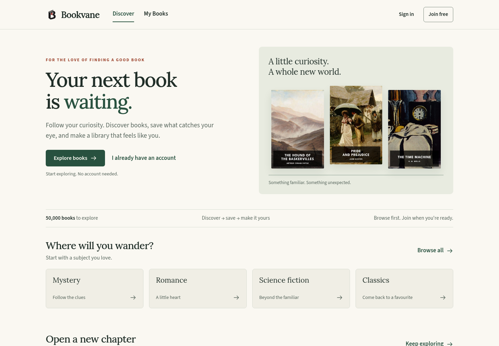
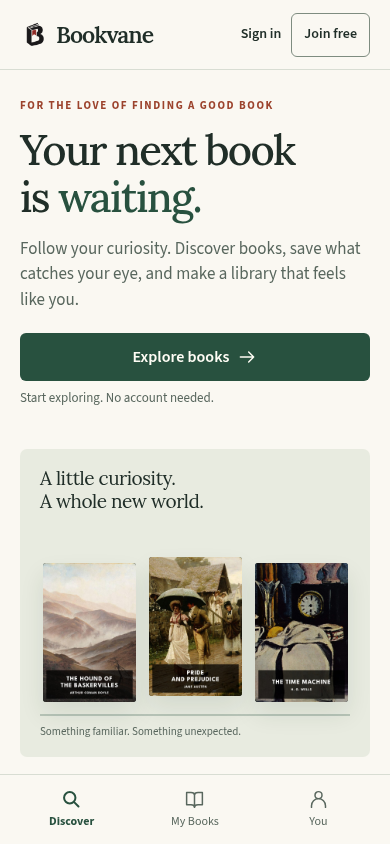
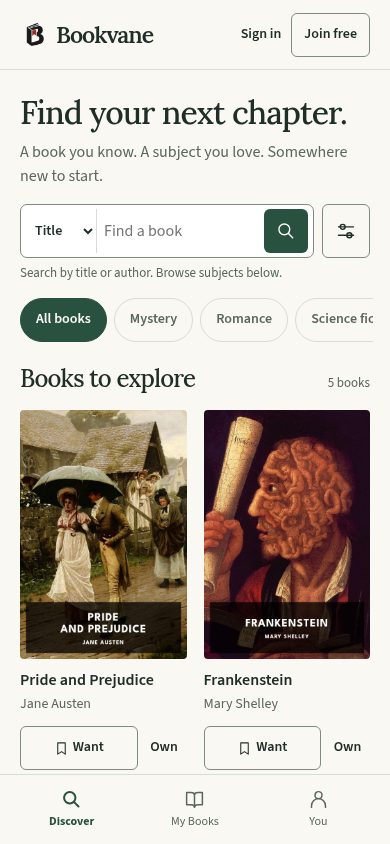
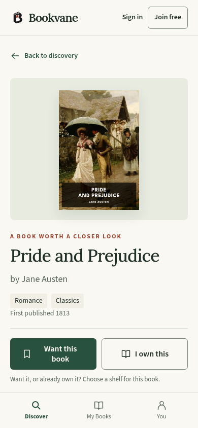
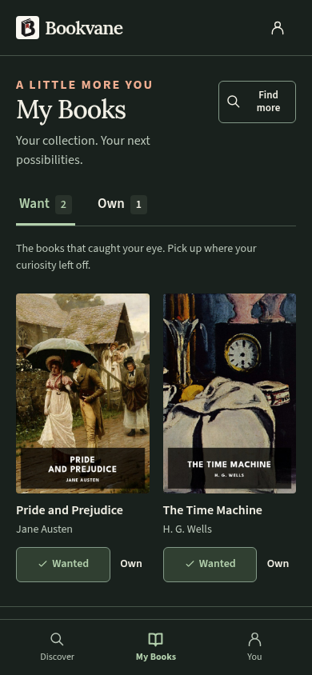
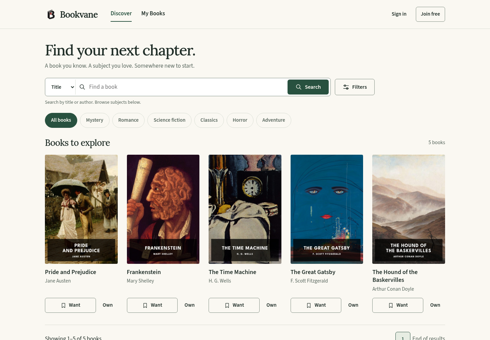

Bookvane. A new chapter.
Reader experience redesign · Desktop & mobile · Light & dark
A bookshop welcome

A reader’s pocket library




Real Standard Ebooks cover references. Sample data in the prototype. Production will use Bookvane’s existing catalogue cover fields.
A quieter, more useful discovery page
